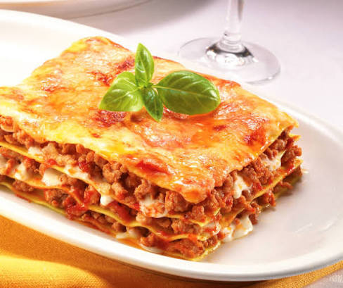

Lasagna
Home

Description
This is a simple lasagna recipe and it is classic Italian dish
Lasagna is a classic Italian casserole made by stacking alternating layers of wide, flat pasta sheets, savory sauces, cheeses, and often meats or vegetables.
Baked until bubbly and golden, it offers a rich, comforting combination of tender noodles, creamy cheese, and a robust sauce
Ingredients
- 1 pound ground beef
- 1 cup chopped onions
- 2 cloves garlic, minced
- 1 can (28 oz) crushed tomatoes
- 1 can (6 oz) tomato paste
- 1 teaspoon dried oregano
- 1 teaspoon dried basil
- 1/2 teaspoon salt
- 1/4 teaspoon black pepper
Steps
- Preheat the oven to 375°F (190°C).
- Cook the ground beef until no longer pink.
- Add the onions and garlic, and cook until the onions are translucent.
- Stir in the crushed tomatoes, tomato paste, oregano, basil, salt, and black pepper.
- Simmer the sauce for 15 minutes.
- Layer the lasagna sheets, sauce, and cheese in a baking dish.
- Bake for 30 minutes, or until the top is golden brown.